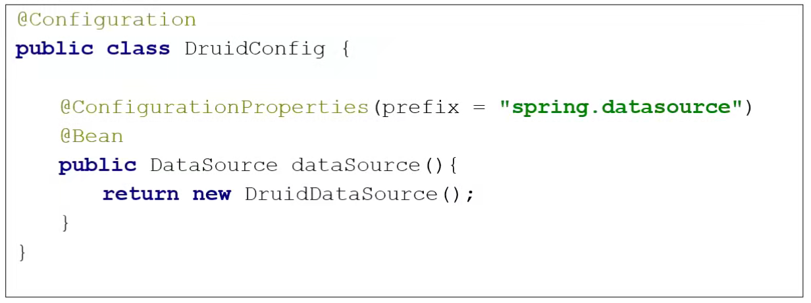

一、数据源自动管理
数据源（DataSource）： SUN制定的用于获取数据库连接的规范接口， 它存在于 javax.sql包中，用来代替 DriverManager 的方式来获取连接。
DataSource 与 DriverManager 获取连接的不同：
1、DriverManager是由SUN实现的，它只供了最基本的获取连接的方式。
注：sun公司是java的开发公司，被oracle（甲骨文公司）收购，java现属于oracle公司。
2、 而DataSource是一个接口，不光SUN可以实现，很多第三方的中间件也可以实现，而且实现得很好。
DataSource一般有如下三种实现方式：
1、标准实现 -- 提供最基本的连接，也就是DriverManager的方式
2、连接池的实现 -- 提供了连接池，是一种可以缓存及管理多个数据库连接的“容器”。
3、分布事务的实现 -- 提供了连接池，而且这个池中的连接是支持分布式事务的(Distribute Transaction)
一般来说，DataSource 都会由专业的中间件(MiddleWare)来实现。当然，也有一些开源(免费)的 DataSource的实现。最有名就是：Apache 组织提供的 commons-dbcp
引入JDBC依赖和springboot的应用场景
<dependency>
<groupId>org.springframework.boot</groupId>
<artifactId>spring-boot-starter-jdbc</artifactId>
</dependency>
<dependency>
<groupId>mysql</groupId>
<artifactId>mysql-connector-java</artifactId>
<scope>runtime</scope>
</dependency>
使用yaml方式配置，创建application.yaml
在默认情况下，数据库连接可以使用DataSource池进行自动配置。
默认 Hikari可用，Springboot将使用它。（这里的默认是在spring-boot-starter-jdbc下默认引入的是Hikari的依赖，引入哪个依赖，springboot就会启用哪个数据源的自动配置（SPI思想））
可以自己指定数据源配置，通过type来选取使用哪种数据源
spring:
datasource:
username: root
password: 2019936206
url: jdbc:mysql://localhost:3306/boot_deom
driver-class-name: com.mysql.cj.jdbc.Driver
type: com.zaxxer.hikari.HikariDataSource
二、配置druid数据源
引入druid的依赖
<dependency>
<groupId>com.alibaba</groupId>
<artifactId>druid</artifactId>
<version>1.1.12</version>
</dependency>
<dependency>
<groupId>log4j</groupId>
<artifactId>log4j</artifactId>
<version>1.2.17</version>
</dependency>
spring:
datasource:
username: root
password: 2019936206
url: jdbc:mysql://localhost:3306/boot_deom
driver-class-name: com.mysql.cj.jdbc.Driver
type: com.alibaba.druid.pool.DruidDataSource
配置数据源连接池的属性
spring:
datasource:
username: root
password: 2019936206
url: jdbc:mysql://localhost:3306/boot_deom
driver-class-name: com.mysql.cj.jdbc.Driver
type: com.alibaba.druid.pool.DruidDataSource
initialSize: 5
minIdle: 5
maxActive: 20
maxWait: 60000
timeBetweenEvictionRunsMillis: 60000
minEvictableIdleTimeMillis: 300000
validationQuery: SELECT 1 FROM DUAL
testWhileIdle: true
testOnBorrow: false
testOnReturn: false
poolPreparedStatements: true
filters: stat,wall,log4j
maxPoolbalDataSourceStat: true
connectionProperties: druid.stat.mergeSql=true;druid.stat.slowSqlMillis=500
创建数据源注册类：
